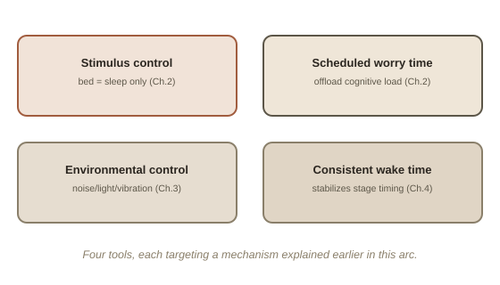

Chapter 5: A Practical Toolkit — CBT-I and Working With Your Own Pattern
Three chapters back, this arc reframed sleep-onset difficulty (Chapter 2) and easily-disrupted sleep (Chapter 3) as measurable, physiologically real patterns rather than character flaws — and traced unusually low sleep inertia (Chapter 4) back to the same underlying architecture. This closing chapter turns from explanation to the actual, evidence-based toolkit for working with — not against — a pattern like this.
CBT-I: the actual gold standard, not sleeping pills
CBT-I (Cognitive Behavioral Therapy for Insomnia) is the treatment sleep medicine organizations actually recommend as the first-line approach for chronic sleep-onset difficulty — ahead of medication, according to major clinical guidelines, because multiple meta-analyses show it produces more durable improvement without the tolerance and dependency issues sleep medication carries. It isn't one single trick; it's a small set of specific, structural techniques, most of which map directly onto the mechanisms covered in this arc.
Stimulus control: rebuilding the bed's meaning
Chapter 2 described cognitive arousal partly as a mind still actively working at exactly the moment it's supposed to hand off to sleep — and one contributing cause is that the bed itself can become associated, through repetition, with wakeful, effortful thinking rather than with sleep. Stimulus control directly targets this: use the bed only for sleep (and sex) — not reading, phone scrolling, or working — and if you're not asleep within roughly 20 minutes, get up, leave the room, and do something calm and dim-lit until sleepy, rather than lying there trying to force it. The goal is rebuilding a strong, specific association between "being in bed" and "sleeping," rather than "being in bed" and "being awake and thinking," which is often exactly backwards for people with strong cognitive arousal.
Scheduled worry time: offloading before bed, not at bed
Directly addressing Chapter 2's cognitive arousal, a well-supported technique is setting aside a specific 10-15 minute period earlier in the evening — not at bedtime — to deliberately write down worries, unfinished tasks, and tomorrow's plans. The point isn't to solve anything in that window; it's to externalize the racing content onto paper on a schedule, so the mind has less unfinished material left to surface right as you're trying to fall asleep. A related technique, sometimes called cognitive shuffling, involves deliberately thinking of unrelated, random, mundane words or images at bedtime — the idea being that structured, effortful thought (worrying, planning) is much harder to sustain than the more diffuse, associative type of thinking the brain naturally drifts into anyway on the way to sleep, so meeting it halfway short-circuits focused rumination.

Environmental control: working with a low arousal threshold instead of fighting it
For the pattern covered in Chapter 3 — waking easily to sound, light, or vibration — the most effective interventions are environmental, not willpower-based: consistent white or brown noise to mask sudden sound spikes (a steady background is far less disruptive than an intermittent one), blackout curtains, and removing vibration sources (phones on silent, off the nightstand) rather than trying to train a lower arousal threshold away directly, which isn't well supported as something that can simply be practiced into changing.
A consistent wake time, even on days it feels unnecessary
The single most consistently recommended, least glamorous piece of advice across sleep research is a fixed wake time, seven days a week, regardless of what time sleep started. This stabilizes the timing of REM-dense, lighter sleep stages toward the same part of each night, which — tying back to Chapter 4 — tends to produce more of the low-inertia waking already being described, more reliably, rather than a somewhat random mix of light and deep-stage wakings from an inconsistent schedule.
When this is worth a professional, not just a chapter
Everything in this arc describes patterns that are common, well-documented, and usually not a sign that anything is wrong. That said, it's worth saying plainly: if sleep-onset difficulty is severe, persistent, and genuinely affecting daily functioning or mood, that's a reasonable, non-alarming thing to bring to a doctor or a sleep specialist — CBT-I is typically delivered with professional guidance for exactly that level of difficulty, and self-directed versions work best for milder, more manageable versions of the same pattern.
Try this
Ideas for noticing or testing this in your own life.
- Try stimulus control for one week: if you're not asleep within about 20 minutes, get up and do something calm in dim light rather than lying there — track whether sleep onset gets easier once the bed stops being where you lie awake.
- Try scheduled worry time tonight: spend 10 minutes, well before bed, writing down whatever's on your mind for tomorrow — then notice whether the same thoughts show up as forcefully once you're actually trying to fall asleep.
Worth pulling on?
A few loose threads from this chapter — if any of these genuinely grab you, that's a good sign of where to go next.
- A related technique, sleep restriction therapy, deliberately shortens time in bed to rebuild sleep pressure and efficiency — it's genuinely effective but uncomfortable to self-administer correctly, which is why it's usually done with professional guidance rather than attempted alone.
- Everything covered so far assumes a reasonably stable schedule — a shift change breaks that assumption in its own specific way, worth its own chapter. → The subject of the next chapter: shift work and the circadian mismatch.
- Everything covered in this arc directly explains why Wake-Back-to-Bed works unusually well for a light, easily-woken sleeper. → Already in the library: Lucid Dreaming builds directly on this same sleep architecture, from the opposite angle — using these traits deliberately instead of managing them.